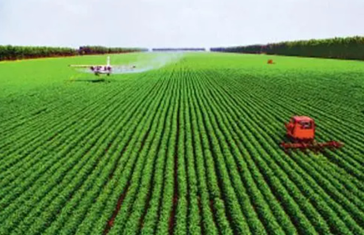
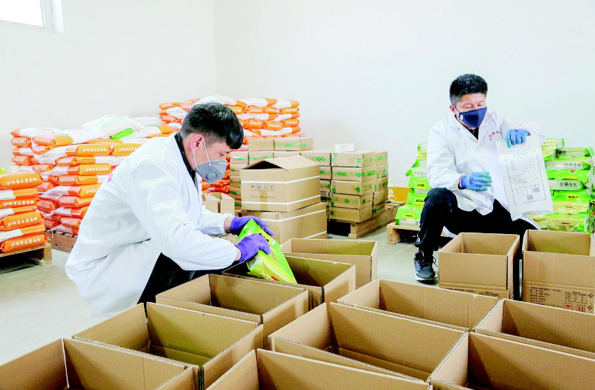
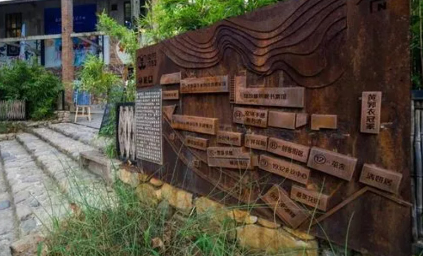
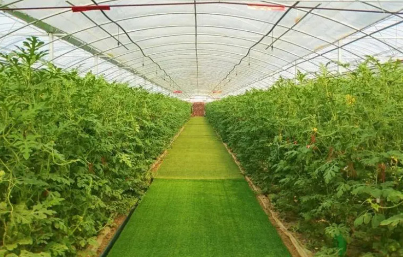
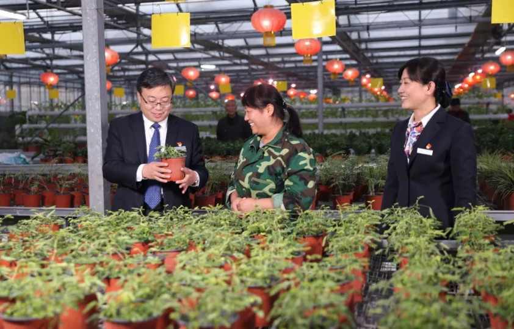
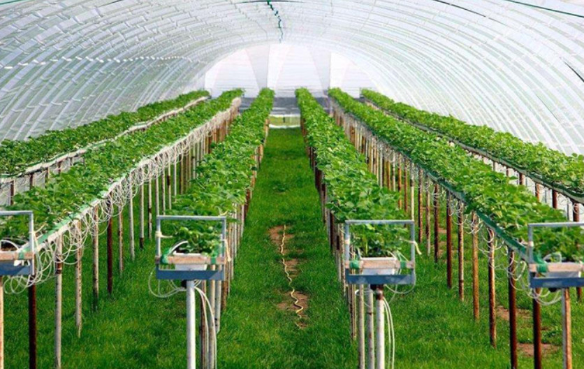

产业发展
-
一：农业现代化
农业是农村产业的核心，推动农业现代化是农村产业发展的关键。通过推广先进的农业技术和管理模式，提高农业生产效益和质量，加强农产品品牌建设和营销渠道，推动农业从传统农业向现代农业的转型。
-
二：农产品加工与销售
农产品加工与销售是农村产业发展的重要环节。通过加工农产品，提高附加值和利润空间。发展农产品的加工企业和农产品品牌，拓展市场销售渠道，提高农产品的附加值和市场竞争力。
-
三：农村旅游与文化创意产业
乡村旅游和文化创意产业是农村产业发展的重要方向。通过发掘乡村的旅游资源和文化特色，开发旅游景点、农家乐等旅游服务设施，吸引游客，提升农村收入和就业机会。
-
四：生态农业与绿色发展
生态农业是农村产业发展的重要组成部分。通过采用生态农业技术和管理模式，保护农田生态环境，提高农产品的生态品质和安全性，满足消费者对绿色、有机农产品的需求。
-
五：农村现代服务业
发展农村现代服务业是农村产业发展的重要途径。包括农村电商、农村金融、农村教育、农村医疗等服务业的发展，提升农民的生活品质和公共服务水平。
-
六：农业科技创新
农业科技创新对于农村产业发展至关重要。通过推动农业科技创新，提高农业生产效率和品质，解决农业生产中的问题，推动农村产业的升级和创新。